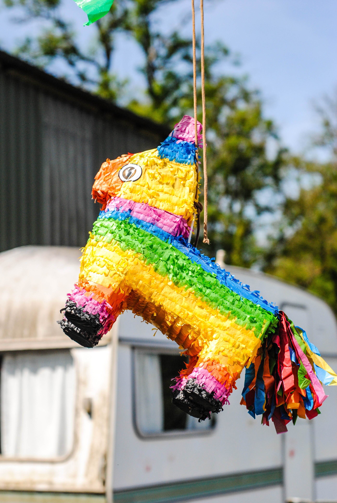

Mexico has many traditional festivals and exclusive celebrations. Most of them are unique, vibrant and strongly influenced by other cultures such as the Aztec, Maya and Olmec civilizations; as well as by traditions of European culture. Here we present a list of some of the coolest mexican traditions and celebrations you have to know.Many Mexicans believe that the souls of the deceased return with their loved ones to live with them temporarily and savor the "essence" of the food that is put in the offerings; where candles, flowers and the deceased's favorite objects are also placed. This party includes, of course, the best traditional foods and many, many colorful flowers of cempazúchitl.
Guelaguetza, means "offering" in the indigenous Zapotec language. This celebration is made in honor of the "Virgen del Carmen".
In this celebration the people of Oaxaca make a cultural show with music, folk dances, songs, etc. With the aim of sharing their traditions with the rest of the communities and the large number of tourists who travel to get to see it. It's really colorful and spectacular!
It is one of the most important and traditional festivals in Mexico that remembers and celebrates the liberation of Mexico from Spanish rule in 1810. The key place for this celebration is the "Zócalo" in Mexico City, where the president in turn recites the "Cry of Independence" in front of thousands of attendees.
During this festivity, many citizens celebrate with traditional mexican food, dress in patriotic colors, decorate their homes and cars with mexican flags, and even paint their faces with patriotic colors.
Mazatlán, Sinaloa and Veracruz are the meeting point where one of the best carnivals in Latin America will take place: "The Carnival of Veracruz".This great colorful festival that lasts nine days includes dances, drinks, performances, and multiple parades of floats, masks and costumes that make anyone happy.